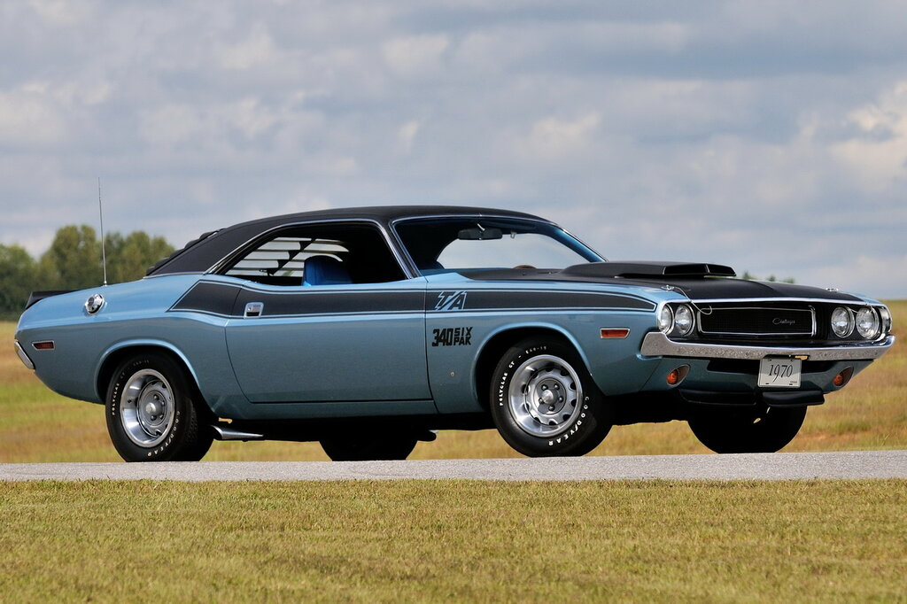
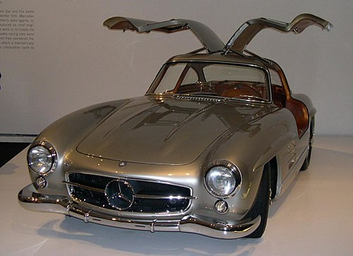

Since its introduction in 1958, the Chevrolet Impala has represented the peak of luxury and accessibility within the American automotive industry. Unlike the Charger and Mustang, the Impala is not a Muscle Car; it is a "Full-Size Cruiser" icon, designed for long journeys and comfort with its large, comfortable, and imposing dimensions. The mid-1960s, in particular, was the Impala’s most popular period. The 1964 Impala continues to be a cultural symbol today with its clean, long lines, and the 1967 Impala (also known from the popular series Supernatural) with its distinct sloping roofline. Often equipped with large V8 engines and being the best-selling car of its era, the Impala is not just a mode of transport, but also a reflection of the 1960s American lifestyle and the quest for comfort.
Technical Specifications
Body Types
Chevrolet Impala's Body Types
2-Door Hardtop Coupe (Sport Coupe)
2-Door Convertible
2-Door Sedan
4-Door Hardtop Sedan (Sport Sedan)
4-Door Station Wagon
4-Door Sedan
Engine Options
Engine Type & Name
Displacement (cu in / L)
Horsepower (HP) (Gross Approx.)
Turbo Thrift I6
250 / 4.1L
140 – 155 HP
Turbo Fire V8
283 / 4.6L
195 HP
Turbo Fire V8
307 / 5.0L
200 HP
Turbo Fire V8
327 / 5.4L
Ranged from 250 HP (standard) to 350 HP (high-performance)
Turbo Fire V8
350 / 5.7L
Ranged from 255 HP (standard) to 300 HP (performance)
Turbo-Jet V8
396 / 6.5L
Ranged from 325 HP to 375 HP
Turbo Fire V8
400 / 6.6L
Approximately 265 HP
Turbo-Jet V8
409 / 6.7L
Ranged from 340 HP up to 425 HP
Turbo-Jet V8
427 / 7.0L
Ranged from 385 HP up to 425 HP
Factory Colors
Color Name
HEX Code (Est.)
Rally Red
#BB232A
Marina Blue
#2A5694
Kalamazoo Green
#4C6251
Butternut Yellow
#F7C969
Silver Nist
#A4A6A7
Ermine White
#F1F1F0
Black (Supernatural Car)
#1A1A1A
Transmission Options
Transmissions
3-Speed Manuel
4-Speed Manuel
2-Speed Powerglide Automatic
3-Speed Turbo Hydramatic (TH-400)
3-Speed Turbo Hydramatic (TH-350)
Video on the Chevrolet Impala
DODGE CHALLENGER (1970-1974) First Generation

The Dodge Challenger made a late but highly ambitious entry into the American Muscle Car market, serving as Chrysler’s (Mopar’s) most aggressive answer to the Ford Mustang and Chevrolet Camaro. First introduced for the 1970 model year, the Challenger was built upon the new E-Body platform shared with the Plymouth Barracuda. Its longer wheelbase than its rivals afforded it a more commanding and authoritative presence on the road. The defining feature that cemented the Challenger's legendary status was its offering of some of the era's most potent engine options, such as the 426 Hemi V8 and the 440 Magnum; these beastly engines transformed the Challenger into a pure machine of speed and performance. The short initial production run, lasting only from 1970 to 1974, dramatically increased its modern classic value, while its starring role in the 1971 cult film Vanishing Point secured the Challenger’s place in cinematic history.
Technical Specifications
Body Types
Dodge Challenger's Body Types
2-Door Hardtop Coupe
2-Door Convertible
Engine Options
Engine Type & Name
Displacement (cu in / L)
Horsepower (HP) (Gross Approx.)
I6 (Slant-Six)
198 / 3.2L
125 hp
I6 (Slant-Six)
225 / 3.7L
145 hp
Small Block V8
318 / 5.2L
230 hp
Small Block V8
340 / 5.6L
275 hp
Big Block V8
383 / 6.3L
290 – 330 hp
Big Block V8
440 Magnum / 7.2L
375 hp
Big Block V8
440 Six-Pack / 7.2L
390 hp
Hemi V8
426 Hemi / 7.0L
425 hp
Factory Colors
Color Name
HEX Code (Est.)
Plum Crazy
#6D3E7E
Go ManGo
#FF7E00
Top Banana
#FFCC00
Sublime / Lime Light
#40FF00
Hemi Orange / Tor-Red
#EE4D2D
Furious Fuchsia / Panther Pink
#CB0066
Transmission Options
Transmissions
3-Speed Manuel
4-Speed Manuel
3-Speed TorqueFlite Automatic (Light Duty)
3-Speed TorqueFlite Automatic (Heavy Duty)
Video on the Dodge Challenger
DODGE CHARGER (1968-1970) second generation
The Dodge Charger is one of the most menacing and recognized symbols of the American Muscle Car era. Although first introduced in 1966, it truly earned its legendary status with the 2nd Generation, which spanned from 1968 to 1970. Unlike the first generation with its aerodynamic headlight covers, this generation features the iconic, curved body lines known as the "Coke Bottle" shape and a full-width grille with hidden headlights. The Charger is not just a powerful motorized vehicle, but also the undisputed star of the cinema and television world. It became a cultural icon, notably appearing in the famous chase scene with Steve McQueen's Mustang in the film Bullitt, and in its distinctive orange color in the TV series The Dukes of Hazzard. Just like the Challenger, the Charger was equipped with legendary Mopar engines such as the 426 Hemi V8 and the 440 Magnum V8, representing the purest and wildest form of the Muscle Car definition.
Technical Specifications
Body Types
Dodge Charger's Body Types
2-Door Hardtop Coupe
Engine Options
Engine Type & Name
Displacement (cu in / L)
Horsepower (HP) (Gross Approx.)
I6 (Slant-Six)
225 / 3.7L
145 hp
Small Block V8
318 / 5.2L
230 hp
Small Block V8
383 / 6.3L
290-330 hp
Big Block V8
440 Magnum / 7.2L
375 hp
Big Block V8
440 Six-Pack / 7.2L
390 hp
Hemi V8
426 Hemi / 7.0L
425 hp
Factory Colors
Color Name
HEX Code (Est.)
Hemi Orange / Tor-Red
#EE4D2D
Plum Crazy
#6D3E7E
Top Banana
#FFCC00
Sublime
#40FF00
F8 Green
#2A554A
B5 Blue
#0072CE
Black Velvet (Bullitt Black)
#000000
Transmission Options
Transmissions
3-Speed Manuel
4-Speed Manuel
3-Speed TorqueFlite Automatic (Light Duty)
3-Speed TorqueFlite Automatic (Heavy Duty)
Video on the Dodge Charger
CHEVROLET CORVETTE (1963-1967) second generation
The Chevrolet Corvette is a legend that has secured its place in American automotive history as a pure sports car, and its Second Generation (C2 Sting Ray) represents the pinnacle of this legacy. Launched in 1963, the Sting Ray arrived with a futuristic, aerodynamic, and aggressive design that was completely distinct from the rounded lines of the previous generation (C1). The most striking feature of the design is the split rear window, which was unique to the 1963 model and used for only one year, alongside its hidden front headlights. Built with a fiberglass body, the C2 targeted not only straight-line speed but also superior handling, featuring advanced engineering components for its time, such as independent rear suspension. Representing driving dynamics as well as sheer power, the Corvette established itself as the very definition of the American sports car, standing apart from vehicles like the Ford Mustang and Dodge Charger
Technical Specifications
Body Types
Chevrolet Corvette's Body Types
2 Door Coupe
2 Door Cabrio
Engine Options
Engine Type & Name
Displacement (cu in / L)
Horsepower (HP) (Gross Approx.)
Small Block V8
327 / 5.4L
250 hp
Small Block V8
327 / 5.4L
300 hp
Small Block V8 (Fuel Injected)
327 / 5.4L
360-375 hp
Big Block V8
427 / 7.0L
390 hp
Big Block V8(L72)
427 / 7.0L
425 hp
Big Block V8(L88)
427 / 7.0L
430 hp
Factory Colors
Color Name
HEX Code (Est.)
Riverside Red
#8F1D2B
Daytona Blue
#343E5E
Tuxedo Black
#0A0A0A
Ermine White
#F1F1F0
Silver Pearl
#A4A4A7
Marlboro Maroon
#562325
Sunfire Yellow
#F0A500
Transmission Options
Transmissions
3-Speed Manuel
4-Speed Manuel
4-Speed Muncie M22 Manuel
2-Speed Powerglide Automatic
3-Speed Turbo Hydramatic Automatic
Video on the Chevrolet Corvette
Mercedes-Benz 300 SL "Gullwing"

When the Mercedes-Benz 300 SL was introduced at the 1954 New York Auto Show, it was hailed as the world's first true supercar and marked a turning point in automotive history. The car's most iconic feature is its upward-opening doors, known as the legendary "Gullwing," which were necessitated by the strong yet lightweight tubular chassis design. These doors created a unique silhouette that made the 300 SL instantly recognizable. Unlike American Muscle Cars, the truly revolutionary aspect of the 300 SL was its engine: the first production car engine to feature direct fuel injection. This technology earned it the title of the fastest production car of its era. Born with the soul of a race car and put on the road, the Gullwing is a timeless classic, merging luxury, aesthetics, and near-Formula 1 engineering
Technical Specifications
Body Types
Mercedes-Benz 300 SL's Body Types
2 Door Coupe
2 Door Roadster (It does not have Gullwing doors.)
Engine Options
Engine Type & Name
Displacement (cu in / L)
Horsepower (HP) (Gross Approx.)
Inline-Six (M198)
3.0L
215 hp
Factory Colors
Color Name (English/German)
HEX Code (Est.)
Silver Metallic (Silber)
#A8A8A8
Black (Schwarz)
#1A1A1A
Fire Engine Red (Feuerwehrrot)
#C6382C
Cream (Cremeweiss)
#F0EAD6
Light Blue Metallic (Hellblau)
#5B89A7
Graphite Grey (Graphitgrau)
#3C3F45
Transmission Options
Transmissions
4-Speed Manuel
Multiple Rear Axle Ratios
Video on the Mercedes-Benz SL 300 "Gullwing"
VOLKSWAGEN THE BEETLE
The Volkswagen Beetle (Bug), holds a unique place in automotive history as one of the first vehicles to be produced for the longest duration and in the highest volume. Designed in the 1930s and built upon simplicity, durability, and affordability, the Beetle became a global phenomenon in the post-World War II era. The most distinctive features of this iconic vehicle are its air-cooled, rear-mounted "Boxer" engine and its rounded, charming body design. Focused on reliability and accessibility rather than performance and luxury, the Beetle is not just a means of transportation but also an undisputed part of popular culture, influenced by the counter-culture of the 1960s and films like Herbie. The Beetle stands as living proof of how engineering ingenuity can achieve success in a simple form.
Technical Specifications
Body Types
Volkswagen Beetle's Body Types
2-Door Sedan (Saloon)
2-Door Convertible (Cabriolet)
Engine Options
Displacement (cu in / L)
Engine Type
Horsepower (HP) (Gross Approx.)
1100 cc / 1.1L
Air-Cooled Flat-Four
25-36 hp
1200 cc / 1.2L
Air-Cooled Flat-Four
36-40 hp
1300 cc / 1.3L
Air-Cooled Flat-Four
40-50 hp
1500 cc / 1.5L
Air-Cooled Flat-Four
50-53 hp
1600 cc / 1.6L
Air-Cooled Flat-Four
57-60 hp
Factory Colors
Color Name
HEX Code (Est.)
Black (Schwarz)
#1A1A1A
Pearl White
#EBEBE0
Black
#000000
Java Green
#566A48
Lotus White
#F0F0F0
Zenith Blue
#46698F
Seville Red
#A42C33
Fiesta Yellow
#FFDD44
Transmission Options
Transmissions
3-Speed Manuel
4-Speed Manuel
3-Speed Semi-Automatic
Video on the Volkswagen Beetle
FORD MUSTANG (1965-1974) FIRST GENERATION
The Ford Mustang's First Generation, spanning from its groundbreaking debut in April 1964 through 1973, is widely regarded as the most significant American automotive launch of its time, instantly creating the "Pony Car" class characterized by its sporty, customizable nature, long hood, and short rear deck. This original design proved to be an unprecedented commercial success, shattering industry records by selling over one million units in just its first eighteen months, thereby establishing the Mustang as an enduring cultural icon associated with youth, freedom, and the attainment of the American dream. The car was offered initially as a hardtop and convertible, later introducing the highly sought-after Fastback body style, with power options ranging from economical six-cylinder engines to robust V8s. Furthermore, this era birthed the most legendary high-performance variants, including the race-proven Shelby GT350 and GT500, as well as the powerful Boss 302 and Mach 1 models, all of which cemented the Mustang's performance heritage. Ultimately, the First Generation Mustang’s timeless styling and phenomenal success cemented its status as the definitive Pony Car, influencing competitors and ensuring its continued popularity as one of the most recognized and desired classic cars globally.